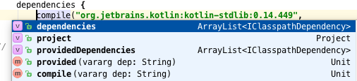

A universal build system for the exigent developer.

Download the zip file then unzip it in a location we'll call KOBALT_HOME:
cd $KOBALT_HOME unzip kobalt-xxx.zip
Change to your project directory and call the kobaltw command with --init:
cd ~/java/project $KOBALT_HOME/kobaltw --init
This command will do two things:
kobalt/src/Build.kt file based on what was found there.
kobalt/ directory. From now on, you can just use ./kobaltw to build and you can ignore $KOBALT_HOME.
You can now attempt to build your project with Kobalt:
./kobaltw assembleIf your project follows a regular build structure (e.g. Maven's hierarchy), this should compile your file and create a .jar file. If not, you will have to make a few edits to your
Build.kt.
As of this writing, Kobalt supports Java and Kotlin projects.
The build file is typically called Built.kt and it is a valid Kotlin file. It contains imports, the declaration of one or more projects and the declaration of additional configurations (e.g. packaging, publishing, etc...). Since it's a Kotlin file, it can also contain any class or function you need:
import com.beust.kobalt.*
import com.beust.kobalt.plugin.kotlin.kotlinProject
val kobalt = kotlinProject {
name = "kobalt"
group = "com.beust"
artifactId = name
version = "0.62"
directory = homeDir("kotlin/kobalt")
}
Here are a few noteworthy details about this small build file:
kobalt which you can reuse further in your build file, should you ever need to.
kotlinProject and homeDir are supplied by Kobalt and are referred to as "directives"
In terms of syntax, there are basically three different ways to specify values in a build file:
name = "kobalt"
compile("dep1", "dep2", "dep2")
dependencies {
...
}
Remember that a build file is a valid Kotlin source, so you can use function calls instead of literal values, or any other correct Kotlin code in your build file:
version = readVersion()
Now that we have declared a project, we can use it to configure additional steps of our build, such as how to assemble it (creating jar and other files):
import com.beust.kobalt.plugin.packaging.assemble
val kobalt = kotlinProject {
// ...
assemble {
jar {
}
}
}
This is the simplest jar declaration you can have. You can trigger the creation of this jar file by invoking the task "assemble" from the command line. Note the presence of the corresponding import: without it, your build file will not compile. Another interesting details is that the assemble function we just imported is an extension function on the Project class, which is how the import makes it legal to call assemble in the middle of our project. If you remove the import, that line will no longer compile.
The jar directive accepts various settings, so let's be a bit more specific. And let's add a zip file too:
assemble {
jar {
fatJar = true
manifest {
attributes("Main-Class", "com.beust.FileHavingMainKt")
}
}
zip {
include("kobaltw")
include(from("$buildDirectory/libs"), to("kobalt/wrapper"),
"$projectName-$version.jar")
include(from("modules/wrapper/$buildDirectory/libs"), to("kobalt/wrapper"),
"$projectName-wrapper.jar")
}
Our jar file is now declared to be a "fat jar" (which means it will include all its dependencies) and we specified a Main-Class to the jar Manifest, which means we will be able to invoke it with java -jar kobalt-0.61.jar. If you don't like this name, you can override it with a name = "myName.jar" statement. FileHavingMain is the class name in the com.beust package that contains a main() function.
The zip directive follows a similar structure, although here we are specifying which file we want to include. For more details on the packaging plug-in, please see its documentation.
Since Build.kt is a valid Kotlin file, you can write arbitrary Kotlin code in it,
including defining tasks. If you ever need to perform an operation that is not supported by an
existing plug-in and it would be overkill to write a plug-in just for it, you can define that
task directly in your build file, including specifying its run dependencies so that it will
be executed exactly when you want it. Here is an example from TestNG's own build file:
@Task(name = "createVersion", runBefore = arrayOf("compile"), runAfter = arrayOf("clean"))
fun taskCreateVersion(project: Project) : TaskResult {
val path = "org/testng/internal"
with(arrayListOf<String>()) {
File("src/main/resources/$path/VersionTemplateJava").forEachLine {
add(it.replace("@version@", VERSION))
}
File("src/generated/java/$path/Version.java").writeText(joinToString("\n"))
}
return TaskResult()
}
This tasks takes a template file and replaces all occurrences of the string "@version@" with the actual version of the project. Obviously, this task is very specific to TestNG's own build and it wasn't worth writing a plug-in ftor this. Note the attributes runBefore and runAfter, which specify when this task will run. You can find more information about tasks in the plug-in development section.
You can declare compile and test dependencies as follows:
dependencies {
compile("com.beust:jcommander:1.48",
"com.beust:klaxon:0.14")
}
dependenciesTest {
compile("org.testng:testng:6.9.5")
}
You can also specify local dependencies with the file directive:
dependencies {
compile(file("libs/async-http.jar"))
}
Kobalt already knows the location of the most popular Maven repos (Maven Central, JCenter, JBoss) but you can add repos with the repos() directive:
val repos = repos("https://dl.bintray.com/cbeust/maven/")
By default, this directive takes URL's as strings, but you can also use local
files with the files directive:
val repos = repos(file("/some/local/directory"))
The homeDir() directive can also come in handy when you want
to specify a directory starting at your home directory:
val repos = repos(file(homeDir("some/directory/in/your/home")))
If one of your repos requires basic authentication, you can supply its credentials
in your local.properties file by specifying keys and values following the format:
authUrl.{host}.username=xxx
authUrl.{host}.password=xxx
Note that the host is just the host name portion of the URL (excluding "http://",
port number, slash and path). For example, for the repo
"https://dl.bintray.com/cbeust/maven/", the credentials would be:
authUrl.dl.bintray.com.username=xxx authUrl.dl.bintray.com.password=xxx
If only one of username or password is specified,
the build will abort with an error.
Kobalt comes with a few preconfigured plug-ins but you will want to include external ones as well, which can be downloaded either from a Maven repository (Sonatype, JCenter, ...) or from a local file.
First of all, let's take a quick look at the tasks available in the default distribution (your actual output might differ somewhat):
$ ./kobaltw --tasks
===== java =====
compile Compile the project
compileTest Compile the tests
test Run the tests
clean Clean the project
===== publish =====
generatePom Generate the .pom file
uploadJcenter Upload the artifacts to JCenter
===== packaging =====
assemble Package the artifacts
Let's modify our build to include a plug-in. We do this by adding a call to the plugins directive on top of the build file:
val repos = repos("https://dl.bintray.com/cbeust/maven/")
val p = plugins("com.beust:kobalt-example-plugin:0.42")
Now, run the --tasks command again:
$ ./kobaltw --tasks
===== java =====
compile Compile the project
===== publish =====
generatePom Generate the .pom file
uploadJcenter Upload the artifacts to JCenter
===== kobalt-example-plugin =====
coverage Run coverage
===== packaging =====
assemble Package the artifacts
Notice the new "coverage" task, provided by the plug-in kobalt-example-plugin that we just included. With the simple action of declaring the plug-in, it is now fully loaded and available right away. Of course, such plug-ins can allow or require additional configuration with their own directives. Please read the plug-in developer documentation for more details.
You can specify more than one project in a build file, simply by declaring them:
val p1 = javaProject { ... }
val p2 = kotlinProject { ... }
If some of your projects need to be built in a certain order, you can specify dependencies when you create your project. For example:
val p2 = kotlinProject(p1) { ... }
This declares that the Kotlin project p2 depends on p1, which means that the project p1 will be built first.
You can also run tasks for a specific project only as follows:
./kobaltw p2:assembleThis will run the
assemble task only for the p2, instead of running it for all projects.
Here are the options that you can pass to ./kobaltw:
| Name | Type | Default | Description | Details |
--buildFile |
File | kobalt/src/Build.kt | Specify a build file. | Use this option if you are trying to build a project whose Build.kt is not in kobalt/src. |
--checkVersions |
Boolean | false | td>Display all the new versions of your dependencies. | This option looks at all the dependencies found in your build file and then contacts all the Maven repositories in order to find out if any of these repos contains a newer version. If any are found, they are displayed:
$ ./kobaltw --checkVersions
New versions found:
com.beust:klaxon:0.14
org.testng:testng:6.9.5
|
--dryRun |
Boolean | false | Display the tasks about to be run without actually running them. | Use this option to get an idea of what the build will run without actually building anything. |
--init |
Boolean | false | Initialize a project for Kobalt. | This option will create a build file in the current directory (unless one already exists) and will install the Kobalt wrapper. |
--log |
Integer (0..3) | 1 | Specify the log level. | The default level is 1. Level 0 will quiet everything and 2 and 3 will display increasingly verbose output. |
--resolve |
Maven id (e.g. "com.beust:kobalt:0.228") |
N/A | Display information about the given id. | Display which repo this artifact can be found in and the whole graph of its dependencies. |
--tasks |
Boolean | false | List the tasks available. | Note that the available tasks will vary depending on which projects are in your build file. |
--update |
Boolean | false | Update Kobalt to the latest version available. | Use this flag if Kobalt just notified you that a new version is available and you want to update. Another way of doing this is to edit kobalt/wrapper/kobalt-wrapper.properties manually. |
Kobalt supports JCenter natively so you can upload your project and make it available on JCenter very easily.
First of all, make sure you specified the group, artifactId and version of your project, as required by Maven:
val kobalt = kotlinProject {
group = "com.beust"
artifactId = "kobalt"
version = "0.72"
Next, create a file local.properties in the root directory of your project with the following keys:
bintray.user=... bintray.apikey=... # Optional. Include this if you want to upload to your org's repo instead of your own. # bintray.organization=...
The values for the user and apikey keys can be found in your bintray profile, as described here. Note that you should not check this local.properties file into your source control (so add it to .gitignore). Next, make sure that your build creates a jar file (using the packaging directive, as explained above).
Now, all you need to do is to upload your package:
./kobaltw uploadJcenter
Profiles allow you to run altered versions of your build file by using command line parameters.
You start by defining boolean values initialized to false in your build file:
val experimental = false val premium = false
Then you use this variable wherever you need it in your build file:
val p = javaProject {
name = if (experimental) "project-exp" else "project"
version = "1.3"
Finally, you invoke ./kobaltw with the --profiles parameter followed by the profiles you want to activate, separated by a comma:
./kobaltw -profiles experimental,premium assemble
Keep in mind that since your build file is a real Kotlin source file, you can use these profile variables pretty much anywhere, e.g.:
dependencies {
if (experimental)
"com.squareup.okhttp:okhttp:2.4.0"
else
"com.squareup.okhttp:okhttp:2.5.0",
Kobalt is licensed under Apache 2.0 and is currently hosted on github.
If you are interested in discussing Kobalt related topics with other fellow users or developers, you have several options:
#kobalt channel.
kobalt-users, the mailing-list for Kobalt users.kobalt-dev, the mailing-list for Kobalt developers. This mailing-list is for people interested in writing code for Kobalt, either the core, or writing plug-ins, or just to follow various technical discussions about Kobalt's internals.